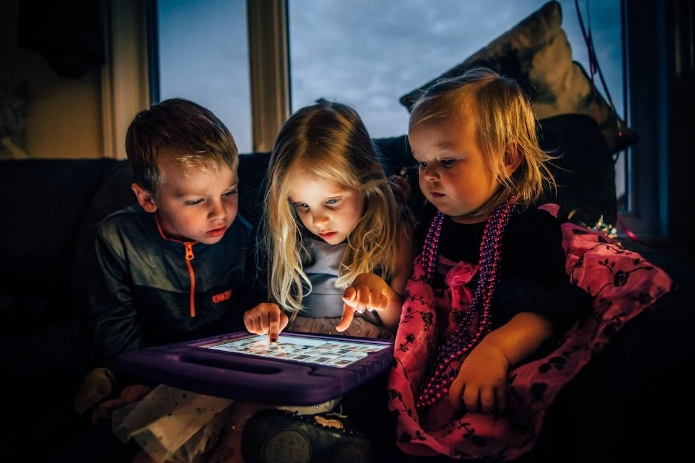

O Futuro da Educação
O Futuro da Educação
O século XXI trouxe consigo uma série de mudanças significativas em todas as esferas da vida humana, e a educação não é exceção. Vivemos em uma era de tecnologia avançada, rápida globalização e novos desafios socioeconômicos, que estão moldando profundamente o panorama educacional.
Uma das transformações mais marcantes na educação neste século é a integração da tecnologia no processo de aprendizagem. Salas de aula digitais, recursos online, plataformas de e-learning e aplicativos educacionais estão se tornando cada vez mais comuns, proporcionando aos alunos acesso a um vasto universo de conhecimento e métodos de ensino interativos e personalizados. Essa revolução tecnológica não apenas democratiza o acesso à educação, mas também estimula a criatividade, o pensamento crítico e a colaboração.
Além disso, o paradigma educacional do século XXI reconhece a importância do desenvolvimento de habilidades socioemocionais em paralelo ao conhecimento acadêmico. Os currículos agora estão incorporando competências como resolução de problemas, comunicação eficaz, colaboração, inteligência emocional e pensamento criativo. Essas habilidades são essenciais para preparar os alunos para enfrentar os desafios complexos e em constante mudança do mundo moderno.
Outra tendência importante na educação do século XXI é a ênfase na aprendizagem ao longo da vida. Com o ritmo acelerado das mudanças tecnológicas e econômicas, a capacidade de aprender, desaprender e reaprender tornou-se fundamental. Os indivíduos agora precisam estar preparados para se adaptar e adquirir novas habilidades ao longo de suas carreiras, e as instituições educacionais estão se ajustando para oferecer programas flexíveis e personalizados que atendam a essa demanda.
Além disso, a globalização trouxe uma nova dimensão à educação, conectando alunos e educadores de todo o mundo. A colaboração internacional, o intercâmbio cultural e a aprendizagem multicultural estão se tornando cada vez mais comuns, preparando os alunos para viver e trabalhar em uma sociedade globalizada.
No entanto, apesar de todos esses avanços, desafios persistentes ainda precisam ser enfrentados no campo da educação. A desigualdade de acesso à educação, a falta de recursos adequados, a qualidade variável do ensino e as disparidades socioeconômicas continuam sendo obstáculos significativos para muitos alunos em todo o mundo.
Em resumo, a educação no século XXI é uma mistura complexa de inovação, desafios e oportunidades. À medida que avançamos neste novo milênio, é crucial continuar aprimorando nossos sistemas educacionais, garantindo que todos os alunos tenham acesso a uma educação de qualidade que os capacite a prosperar em um mundo em constante evolução.
Espero que este texto sobre a educação no século XXI seja útil e informativo!
O futuro da educação
A educação no século XXI está passando por mudanças profundas...